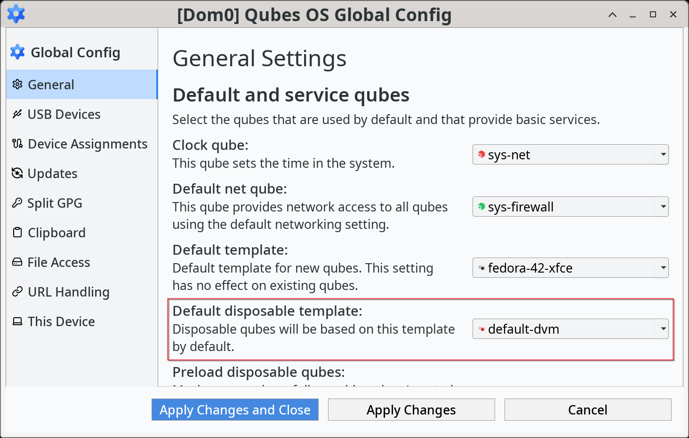
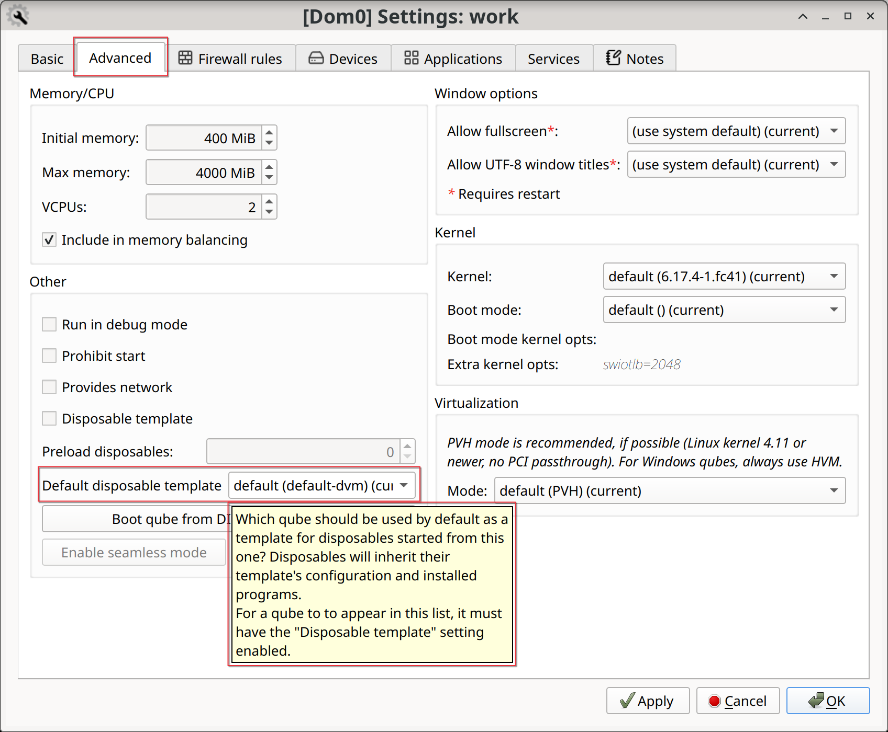

Disposable customization
警告
This page is intended for advanced users.
Introduction
A disposable can be based on any disposable template. You can have as many disposables or disposable templates as you'd like. This page contains information on advanced methods to use disposables, how to customize them, how to deal with multiple disposable templates and how to delete them.
Security
If a disposable template becomes compromised, then any disposable based on that disposable template could be compromised. Therefore, you should not make any risky customization (e.g., installing untrusted browser plugins) in important disposable templates. In particular, the default disposable template is important because it is used by most app qubes. This means that a compromised disposable template could be used to derive disposables that will have access to everything that you choose to open in a disposable. For this reason, it is strongly recommended that you base the default disposable template on a trusted template and refrain from making any risky customization to it.
Disposables and local forensics
At this time, disposables should not be relied upon to circumvent local forensics, as they do not run entirely in RAM. When it is essential to avoid leaving any trace, consider using Tails on bare-metal, as using Tails on a qube cannot be relied on for amnesiac purposes.
Disposables settings inheritance
Similarly to how app qubes are based on their underlying template, disposables are based on their underlying disposable template.
By default, a disposable will inherit the network and firewall settings of the disposable template on which it is based. Therefore, launching a disposable from an app qube will result in it using the network/firewall settings of the disposable template on which it is based. For example, if an app qube uses sys-net as its net qube, but the default system disposable uses sys-whonix, any disposable launched from this app qube will have sys-whonix as its net qube.
警告
Changing the net qube setting for the system's default disposable template does affect the net qube of its new disposables. Different disposable templates with individual net qube settings can be added to the app menu.
You can set an app qube that has also been configured as a disposable template to use itself, so disposables launched from within the app qube/disposable template would inherit the same settings. This is recommended to avoid sharing too much information about your system, as inhering the same configuration means it helps prevent network leaks. For example, anon-whonix has its default_dispvm a Whonix-Workstation qube such as whonix-workstation-12-dvm (where 12 is the template's release number), instead of the system default. This ensures that all traffic goes through the intended network chain.
警告
The opposite is also true. If you have changed anon-whonix's default_dispvm to use the system default, and the system default disposable template uses sys-net, launching a disposable from inside anon-whonix will result in the disposable using sys-net.
Advanced disposable usage
Open a program in a disposable via command line (from app qube)
Sometimes it can be useful to start an arbitrary program in a disposable. This can be done from an app qube with qvm-run-vm:
[user@work ~]$ qvm-run-vm -- '@dispvm' qubes-run-terminal
The work qube default disposable template spawns a disposable to execute the program.
Caution: this disposable will shut down when the program is closed.
Open a link in a disposable based on a non-default disposable template via command line (from app qube)
Suppose that you have a qube named email and its default disposable template email-dvm has no networking (e.g., so that untrusted attachments can't phone home). However, sometimes you want to open email links in disposables. Obviously, you can't use the default disposable template, since it has no networking, so you need to be able to specify a different disposable template, such as net-dvm
Open the user policy and insert the following rule:
# SERVICE ARGUMENT FROM TO ACTION
qubes.OpenURL * email @dispvm:net-dvm allow
The line above means:
SERVICE:
Open URLrequest fromQubesvendor.ARGUMENT: Any argument is allowed.
FROM:
emailqube.TO: A disposable based on the disposable template
net-dvm.ACTION: Allow action to proceed.
In other words, the email qube will be allowed to create a new disposable based on net-dvm and open a URL inside of that disposable. For more information about qrexec usage, checkout the policy directives.
To check if everything is working as expected, from the email qube with qvm-open-in-vm:
[user@email ~] $ qvm-open-in-vm -- '@dispvm:net-dvm' 'https://www.qubes-os.org'
The email qube requests to open an URL in a non default disposable template net-dvm, which will derive a disposable and navigate to the link.
Make a particular application open everything in a disposable
You can enable a qube service to cause an application in a qube to open files and URLs in a disposable. In order to accomplish this, enable a service named app-dispvm.X in that qube, where X is the application ID, which is the application name minus the .desktop extension.
For instance, to have Mozilla Thunderbird application open all attachments in a disposable, find its application name with  , hover your mouse over the application to see the
, hover your mouse over the application to see the .desktop filename. Or use the command line equivalent:
qvm-appmenus --get-available --i-understand-format-is-unstable <QUBE> | grep -i thunderbird
In the current case, we identified the application ID to be net.thunderbird.Thunderbird (in your case it may as well be thunderbird). Finally, enable the app-dispvm.net.thunderbird.Thunderbird service via the qube settings.
警告
This feature is currently somewhat experimental, and only works for Linux qubes. It is known to work with Thunderbird and Wire, but it may fail to work with some applications that do not honor all XDG environment variables. If the feature does not work for you, please file a bug report.
Open a particular file type in a disposable
You can set qvm-open-in-dvm.desktop as the handler for a given MIME type (such as application/pdf). This will cause all files of that type to open in a disposable. This works in disposable templates too, but be careful: if your disposable template is set to use qvm-open-in-dvm.desktop to open a certain kind of file, every disposable based on it will be as well.
警告
If the disposable template is its own default disposable template (as is often the case), this will result in a loop: qvm-open-in-dvm will attempt to execute qubes.OpenURL in a new disposable, but that will in turn execute qvm-open-in-dvm. A question dialog will appear to confirm if this is the intended behavior or not.
This will not override the internal handling of PDF documents in Web browsers. This is typically okay, though, in-browser PDF viewers have a fairly good security record, especially when compared to non-browser PDF viewers. In particular, the attack surface of PDF viewing in Firefox is usually less than that of viewing an ordinary Web page.
Set the default disposable template
Set the system's default disposable template
The system's default disposable template can be configured in  , choose to your liking and click Apply Changes and Close.
, choose to your liking and click Apply Changes and Close.

This can also be changed from the command line with with qubes-prefs:
user@dom0:~$ qubes-prefs default_dispvm <DISPOSABLE_TEMPLATE>
The above setting is used whenever a qube has the property default_dispvm set to default, request starting a new disposable and do not specify which one, for example, via file manager context menu Edit/View in disposable qube or qvm-open-in-dvm tool), also with Convert in disposable qube (qvm-convert-img, qvm-convert-pdf).
Set the qube's default disposable template
The per qube default disposable template can be configured in the app menu, for example, to change the setting for the work qube, in  , select your preference and click OK to apply the changes and close the window.
, select your preference and click OK to apply the changes and close the window.

This can also be changed from the command line with qvm-prefs:
user@dom0:~$ qvm-prefs work default_dispvm <DISPOSABLE_TEMPLATE>
A qube can be allowed to use multiple disposable templates if you choose so and have configured the policy to allow.
Customize a disposable
警告
If you are trying to customize Tor Browser in a Whonix disposable, please consult the Whonix documentation instead.
Change qube settings
It is possible to change the disposable settings just like any other qube. You might, for example, want to disable all networking for the specific disposable template by default, which can be done by setting the net qube to none. Then, whenever you start a new disposable, you can choose your desired net qube manually by changing the newly-started disposable's settings.
Add programs to the app menu
For added convenience, arbitrary programs can be added to the app menu of the disposable template just like for any other qube.
In order to do that, go to  and select desired applications as for any other qube.
and select desired applications as for any other qube.
Only applications whose main process keeps running until you close the application will work.
Change application settings manually
It is also possible to change application settings of a disposable by customizing the disposable template:
Start a terminal (or your chosen application) in the
<DISPOSABLE_TEMPLATE>qube with or by running the following command in a GUI domain:
or by running the following command in a GUI domain:user@dom0:~$ qvm-run --service -- <DISPOSABLE_TEMPLATE> qubes.StartApp+qubes-run-terminal
Change the applications settings, as desired. Some examples of changes you may want to make include:
Firefox's default startup settings and homepage.
Default editor, image viewer. In Debian derivatives, this can be done with the mimeopen command.
Shutdown the qube, either with Qubes Domains widget,
, qvm-shutdown from the GUI domain terminal or with poweroff from qube's terminal.
Change application settings dynamically
It is possible to specify data from the GUI domain to be read inside the qube using vm-config.* features. This is useful to pass secrets to a single qube instead of writing to the disposable template, which would be shared with all descendants of it.
Let's take for example sys-net, which could be a disposable if you enabled that option during installation. In that case, it's template is default-dvm, but that is also the template for disposables that launch applications which you don't trust. It would be improper to write the Wi-Fi password to default-dvm, as it would expose it to numerous qubes. Instead, write the data as a qube feature using the vm-config.X syntax, where X is any valid identification string you'd like.
备注
It is up to each qube to handle these entries. In this case, nmcli command should be called from somewhere during qube startup to configure the network, it is up to the user to manage it.
From the GUI domain:
user@dom0:~$ qvm-features sys-net vm-config.wifi-ssid <SSID>
user@dom0:~$ qvm-features sys-net vm-config.wifi-pass <PASSWORD>
From the configured qube, sys-net:
[user@sys-net ~] $ qubesdb-read /vm-config/wifi-ssid
[user@sys-net ~] $ qubesdb-read /vm-config/wifi-pass
Create a new disposable template
You can create as many disposable templates as you want. First, you need to create an app qube.
Next, go to  and enable it, at last, click on OK to accept the changes and close the window. To modify settings of the disposable template itself or how programs are run on it, use the TEMPLATES tab.
and enable it, at last, click on OK to accept the changes and close the window. To modify settings of the disposable template itself or how programs are run on it, use the TEMPLATES tab.
You can also use the command line equivalent:
user@dom0:~$ qvm-create --template <TEMPLATE> --label red <DISPOSABLE_TEMPLATE>
user@dom0:~$ qvm-prefs <DISPOSABLE_TEMPLATE> template_for_dispvms True
user@dom0:~$ qvm-features <DISPOSABLE_TEMPLATE> appmenus-dispvm 1
The appmenus-dispvm feature is only necessary if you intend to launch disposables derived from this disposable template via graphical applications. When enabled, new entries will be available for each application in  while disposable qube desktop entries will have
while disposable qube desktop entries will have (dvm) string inserted. Clicking on this entry will launch the application in a new disposable based on the disposable template (not in the disposable template itself).
重要
Application shortcuts that existed before setting this feature will not be updated automatically. Please go to  , in the Applications tab, unselect all existing shortcuts by clicking <<, then click OK and close the dialog. Give it a few seconds and then reopen and re-select all the shortcuts you want to see in the menu. See app menu shortcut troubleshooting for background information.
, in the Applications tab, unselect all existing shortcuts by clicking <<, then click OK and close the dialog. Give it a few seconds and then reopen and re-select all the shortcuts you want to see in the menu. See app menu shortcut troubleshooting for background information.
Creating named disposables for service qubes
You can use a named disposable for a service qube (such as those with the sys-* naming scheme) as long as they are stateless. For example, a sys-net using DHCP or sys-usb will work. In most cases sys-firewall will also work, even if you have configured app qube firewall rules. The only exception is if you require something like qube to qube communication and have manually edited nftables or other items directly inside the firewall app qube.
Named disposable for service qubes without PCI devices via GUI
To create one that has no PCI devices attached, such as for sys-firewall, create a named disposable. Write a name, choose a label and select Launch Qube Settings after creation. Click Create new qube to complete creation. When the Qube Settings opens:
In Basic tab:
Check Start qube automatically on boot
Set Net qube to sys-net
In Advanced tab:
Check Provides network
Click OK to save changes and close the window.
On the GUI domain terminal, disable disposable's appmenus:
user@dom0:~$ qvm-features <SERVICE_QUBE> appmenus-dispvm ''
Next, set the old service qube's autostart to false, and update any references to the old one to instead point to the new in the Qube Settings of each qube as well as Global Config. For example, qvm-prefs work netvm <SERVICE_QUBE> and qubes-prefs default_netvm <SERVICE_QUBE.
Named disposable for service qubes without PCI devices via command line
To create one that has no PCI devices attached, such as for sys-firewall:
user@dom0:~$ qvm-create -C DispVM -l green <SERVICE_QUBE>
user@dom0:~$ qvm-prefs <SERVICE_QUBE> autostart true
user@dom0:~$ qvm-prefs <SERVICE_QUBE> netvm <NET_QUBE>
user@dom0:~$ qvm-prefs <SERVICE_QUBE> provides_network true
user@dom0:~$ qvm-features <SERVICE_QUBE> appmenus-dispvm ''
Next, set the old service qube's autostart to false, and update any references to the old one to instead point to the new in the Qube Settings of each qube as well as Global Config. Also make sure to update any RPC policies, if needed.
Here is an example of a complete sys-firewall replacement:
user@dom0:~$ qvm-create -C DispVM -l green sys-net2
user@dom0:~$ qvm-prefs sys-net2 autostart true
user@dom0:~$ qvm-prefs sys-net2 netvm <NET_QUBE>
user@dom0:~$ qvm-prefs sys-net2 provides_network true
user@dom0:~$ qvm-features sys-net2 appmenus-dispvm ''
user@dom0:~$ qubes-prefs default_netvm sys-net2
user@dom0:~$ qubes-prefs updatevm sys-net2
user@dom0:~$ qvm-prefs sys-firewall netvm sys-net2
Named disposable for service qubes with PCI devices via GUI
To create one with a PCI device attached, such as for sys-net or sys-usb, create a named disposable. Write a name, choose a label and select Launch Qube Settings after creation. Click Create new qube to complete creation. When the Qube Settings opens:
In Basic tab:
Check Start qube automatically on boot
Set Net qube to (none)
In Advanced tab:
In Virtualization section, set Mode to HVM
In Memory/CPU section, uncheck Include in memory balancing
In Devices tab:
Select devices in the Available devices section and attach them to the qube by clicking on >
Optionally, if this disposable will also provide network access to other qubes:
In Advanced tab:
Check Provides network
Click OK to save changes and close the window.
On the GUI domain terminal, disable disposable's appmenus:
user@dom0:~$ qvm-features <SERVICE_QUBE> appmenus-dispvm ''
Next, set the old service qube's autostart to false, and update any references to the old one, e.g.:
user@dom0:~$ qvm-prefs sys-firewall netvm <SERVICE_QUBE>
Also make sure to update any RPC policies, if needed.
Named disposable for service qubes with PCI devices via command line
To create one with a PCI device attached, such as for sys-net or sys-usb:
重要
You can use qvm-pci to determine the <BDF>. Also, you will often need to include the -o no-strict-reset=True option with USB controllers.
user@dom0:~$ qvm-create -C DispVM -l red <SERVICE_QUBE>
user@dom0:~$ qvm-prefs <SERVICE_QUBE> virt_mode hvm
user@dom0:~$ qvm-prefs <SERVICE_QUBE> maxmem 0
user@dom0:~$ qvm-prefs <SERVICE_QUBE> autostart true
user@dom0:~$ qvm-prefs <SERVICE_QUBE> netvm ''
user@dom0:~$ qvm-features <SERVICE_QUBE> appmenus-dispvm ''
user@dom0:~$ qvm-pci attach --persistent <SERVICE_QUBE> dom0:<BDF>
Optionally, if this disposable will also provide network access to other qubes:
user@dom0:~$ qvm-prefs <SERVICE_QUBE> provides_network true
Next, set the old service qube's autostart to false, and update any references to the old one, e.g.:
user@dom0:~$ qvm-prefs sys-firewall netvm <SERVICE_QUBE>
Also make sure to update any RPC policies, if needed.
Here is an example of a complete sys-net replacement:
user@dom0:~$ qvm-create -C DispVM -l red sys-net2
user@dom0:~$ qvm-prefs sys-net2 virt_mode hvm
user@dom0:~$ qvm-prefs sys-net2 maxmem 0
user@dom0:~$ qvm-prefs sys-net2 autostart true
user@dom0:~$ qvm-prefs sys-net2 netvm ''
user@dom0:~$ qvm-prefs sys-net2 provides_network true
user@dom0:~$ qvm-features sys-net2 appmenus-dispvm ''
user@dom0:~$ qvm-pci attach --persistent sys-net2 dom0:00_1a.0
user@dom0:~$ qvm-prefs sys-net autostart false
user@dom0:~$ qvm-prefs sys-firewall netvm sys-net2
user@dom0:~$ qubes-prefs clockvm sys-net2
Deleting disposable templates
It is only possible to delete a disposable template if certain state is met:
No disposables based on it (preloaded disposables can be ignored).
No system or qube property links to it (such as
templateordefault_dispvm).
Let's delete a disposable template with  .
.
Or with the command line equivalent:
user@dom0:~$ qvm-remove <DISPOSABLE_TEMPLATE>
This will completely remove the selected VM(s)
<DISPOSABLE_TEMPLATE>
Are you sure? [y/N]
The deletion may fail if the qube is still referenced, in that case, proceed to the next sections.
Retire the qube from being the system's default disposable template
The system's default disposable template may reference the <DISPOSABLE_TEMPLATE>. Let's check if it is being used with  . Or the command line equivalent.
. Or the command line equivalent.
user@dom0:~$ qubes-prefs default_dispvm
<DISPOSABLE_TEMPLATE>
If the <DISPOSABLE_TEMPLATE> is referenced, set an alternative, and if no alternative is available, set it to an empty value.
Retire the qube from being a qube's default disposable template
Now let's check the per qube default_dispvm property for any qube, in this case, the work qube, in  . Or use the command line equivalent:
. Or use the command line equivalent:
user@dom0:~$ qvm-prefs <QUBE> | grep default_dispvm
default_dispvm - <DISPOSABLE_TEMPLATE>
If the <DISPOSABLE_TEMPLATE> is referenced, set an alternative, and if no alternative is available, set it to an empty value.
This process must be repeated for every qube that references the <DISPOSABLE_TEMPLATE>.
Disposable template deletion troubleshooting
If you still encounter a problem, you may have forgotten to clean an entry. Looking at the system logs will help you:
user@dom0:~$ journalctl -S 60s